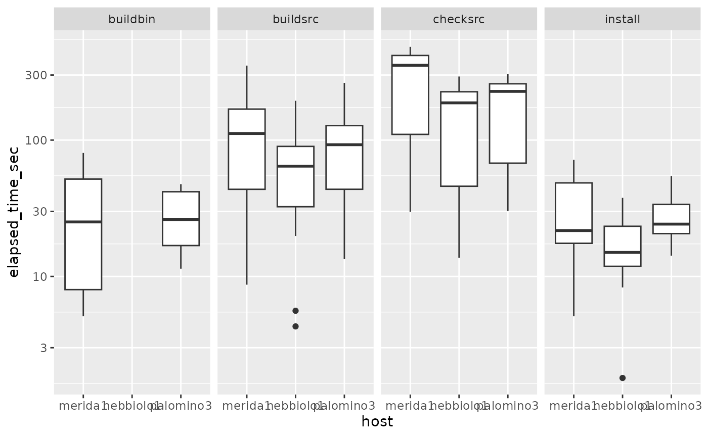

vignettes/bbsBuildArtifacts.Rmd
bbsBuildArtifacts.RmdWe’d like to be able to get a quick overview of status for a subset of Bioconductor packages. “Status” is relative to Bioconductor version, package version, build platform, and condition of the platform.
We want to be able to work with the current artifacts provided at, e.g., https://bioconductor.org/checkResults/3.15/bioc-LATEST/report.tgz. Such gzipped tar resources are prepared for different types of resource.
suppressMessages({
suppressPackageStartupMessages({
library(bbsBuildArtifacts)
library(dplyr)
library(DT)
library(ggplot2)
})
})
bbsBuildArtifacts:::valid_types()## [1] "bioc" "data-experiment" "workflows" "books"
## [5] "bioc-longtests"We’ll focus on type bioc for now, which associates with Software packages. We don’t yet know if report.gz has the same structure for all types, but we hope so.
Our objective is to learn the status and processing times for various phases of the build process for all packages, and to analyze error, warning and note events programatically.
We define an S4 class ArtifSet to manage key information about builds. ArtifSet instances are produced using setup_artifacts.
We’ve produced a thinned version of the BBS report.tgz accessible in the package at demo_url(), which has prefix file:// referring to a file in the locally installed bbsBuildArtifacts package. If url is not supplied to setup_artifacts(), the report.tgz will be retrieved from bioconductor.org, and cached using BiocFileCache with an informative rname.
af = setup_artifacts(type="bioc", version="3.14", url=demo_url(),
destbase="test_report")## starting untar...## done.
af## bbsBuildArtifacts ArtifSet instance.
## 44 pkg paths for type bioc, Bioconductor version 3.14.
## 8 extra file paths.
## tarball production date: 2021-12-22
## R version: 4.1.2 (2021-11-01) -- "Bird Hippie"
## Platforms:
## Linux (Ubuntu 20.04.3 LTS)
## macOS 10.14.6 Mojave
## Windows Server 2012 R2 Standard
## Use paths(aset)[...] to retrieve selected paths.Information of immediate interest can be derived and tabulated in a data.frame instance.
d = as.data.frame(af)
dim(d)## [1] 528 6
head(d)## host pkgname pkgversion status elapsed_time phase
## 1 nebbiolo2 a4 1.42.0 OK 18.1 install
## 2 nebbiolo2 a4 1.42.0 OK 110.3 buildsrc
## 3 nebbiolo2 a4 1.42.0 OK 66.2 checksrc
## 4 nebbiolo2 a4 1.42.0 NA NA buildbin
## 5 nebbiolo2 affy 1.72.0 OK 16.5 install
## 6 nebbiolo2 affy 1.72.0 OK 55.4 buildsrcWe use this to get statistics about timings for package installation, building and checking.
## machv2 nebbiolo2 tokay2
## 9.384222 6.111333 11.921000## buildbin buildsrc checksrc install
## 1.516389 8.612028 14.538333 2.749806
ggplot(mutate(d, elapsed_time_sec=elapsed_time), aes(y=elapsed_time_sec, x=host)) +
geom_boxplot() + facet_grid(.~phase) + scale_y_log10() ## Warning: Removed 106 rows containing non-finite values (stat_boxplot).
Because the build/check processes are error prone, some packages may lack information described below.
raw_info
This is a selection from content of an info.dcf produced for each package.
str(bbsBuildArtifacts:::make_raw_info(af, "SummarizedExperiment"))## Formal class 'BBS_raw_pkg_info' [package "bbsBuildArtifacts"] with 6 slots
## ..@ name : chr "SummarizedExperiment"
## ..@ last_commit_date: POSIXct[1:1], format: "2021-10-26 17:20:46"
## ..@ version :List of 1
## .. ..$ Version:Classes 'package_version', 'numeric_version' hidden list of 1
## .. .. ..$ : int [1:3] 1 24 0
## .. ..- attr(*, "class")= chr [1:2] "package_version" "numeric_version"
## ..@ commit_tag : Named chr "d37f193"
## .. ..- attr(*, "names")= chr "git_last_commit"
## ..@ branch : Named chr "RELEASE_3_14"
## .. ..- attr(*, "names")= chr "git_branch"
## ..@ maint_email : Named chr "maintainer at bioconductor.org"
## .. ..- attr(*, "names")= chr "MaintainerEmail"Here’s how we can obtain the installation log for SummarizedExperiment on nebbiolo2, for December 10 2021.
pd1 <- make_BBS_package_data(af, "SummarizedExperiment")
pd1## BBS_package_data for package 'SummarizedExperiment' version 3.14
names(slot(pd1, "host_data"))## [1] "nebbiolo2" "machv2" "tokay2"
hd = slot(pd1, "host_data")
cat(slot(hd$nebbiolo2, "install"), sep="\n")## ##############################################################################
## ##############################################################################
## ###
## ### Running command:
## ###
## ### /home/biocbuild/bbs-3.14-bioc/R/bin/R CMD INSTALL SummarizedExperiment
## ###
## ##############################################################################
## ##############################################################################
##
##
## * installing to library ‘/home/biocbuild/bbs-3.14-bioc/R/library’
## * installing *source* package ‘SummarizedExperiment’ ...
## ** using staged installation
## ** R
## ** inst
## ** byte-compile and prepare package for lazy loading
## ** help
## *** installing help indices
## ** building package indices
## ** installing vignettes
## ** testing if installed package can be loaded from temporary location
## ** testing if installed package can be loaded from final location
## ** testing if installed package keeps a record of temporary installation path
## * DONE (SummarizedExperiment)The date of the build is not currently recorded in a convenient place.
The installation information for affyPara is more interesting:
pd2 <- make_BBS_package_data(af, "affyPara")
hd = slot(pd2, "host_data")
cat(slot(hd$nebbiolo2, "install"), sep="\n")## ##############################################################################
## ##############################################################################
## ###
## ### Running command:
## ###
## ### /home/biocbuild/bbs-3.14-bioc/R/bin/R CMD INSTALL affyPara
## ###
## ##############################################################################
## ##############################################################################
##
##
## * installing to library ‘/home/biocbuild/bbs-3.14-bioc/R/library’
## * installing *source* package ‘affyPara’ ...
## ** using staged installation
## ** R
## ** byte-compile and prepare package for lazy loading
## ** help
## *** installing help indices
## ** building package indices
## ** installing vignettes
## ** testing if installed package can be loaded from temporary location
## Error: package or namespace load failed for ‘affyPara’:
## .onLoad failed in loadNamespace() for 'affyPara', details:
## call: assign(".affyParaInternalEnv", .affyParaInternalEnv, envir = topenv(parent.frame()))
## error: cannot add binding of '.affyParaInternalEnv' to the base environment
## Error: loading failed
## Execution halted
## ERROR: loading failed
## * removing ‘/home/biocbuild/bbs-3.14-bioc/R/library/affyPara’Much of the content of these logs is routine unilluminating chatter. Isolating the information of functional value is a project for future effort.